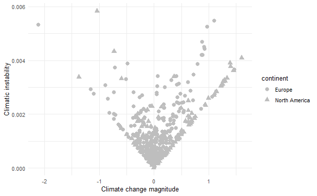
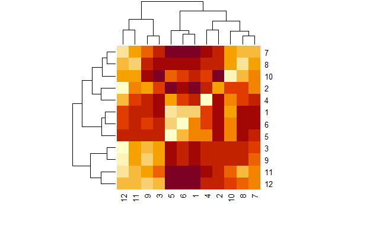
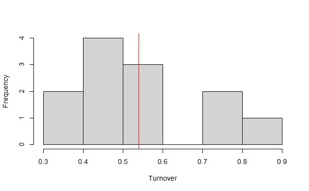
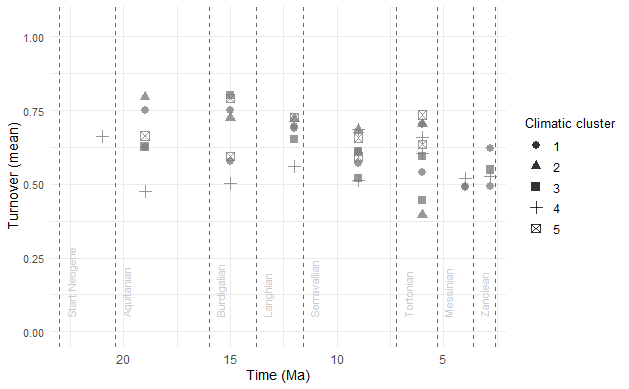
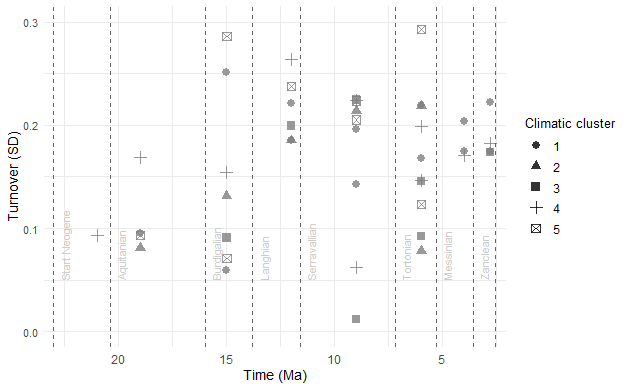
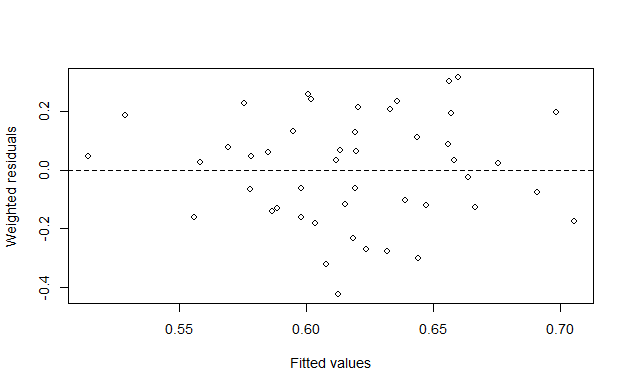
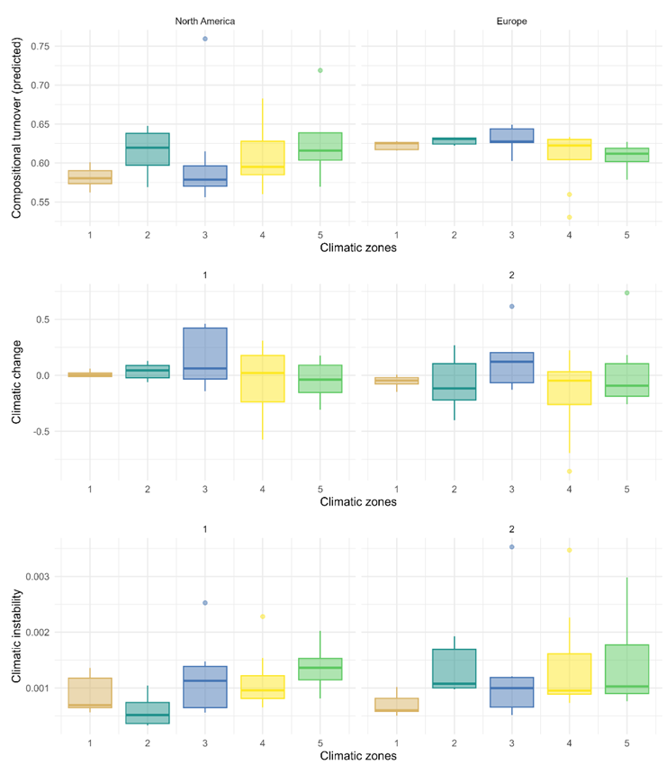
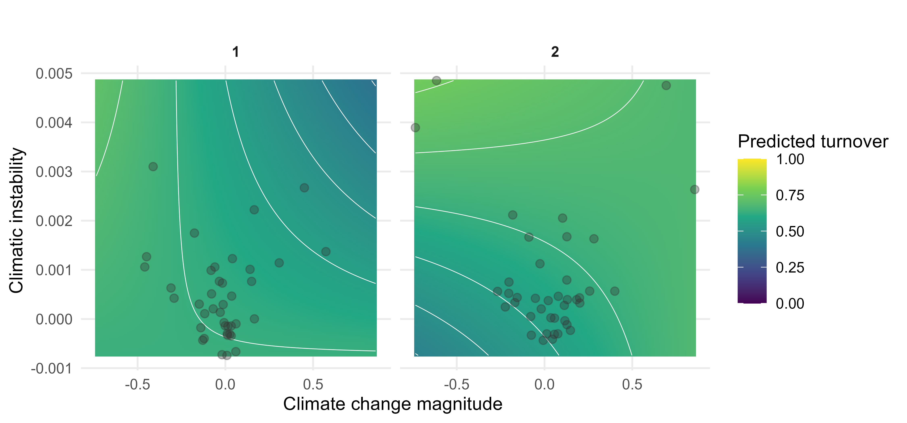
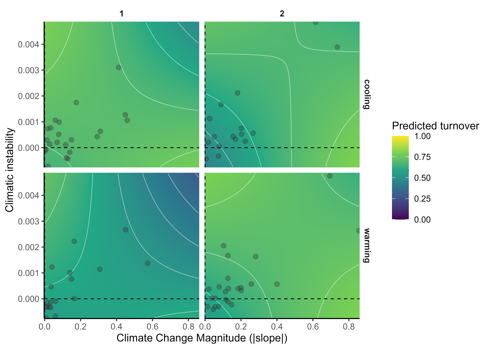

Appendix C — Climate change drove the deep-time assembly of biodiversity
C.1 Paleoclimatic data
C.1.1 Neogene paleotemperature layers used in climate reconstructions.
Spatially explicit reconstructions of mean annual surface temperature across the Northern Hemisphere from 23 to 2 Ma, shown at 1-Myr intervals and 1° × 1° spatial resolution. Each panel represents a single time slice, displayed using a common diverging color scale to facilitate comparison across time. These layers form the basis for estimating directional temperature change and climatic instability used in subsequent analyses.

C.1.2 Sensitivity of Neogene temperature‐change estimates to GAM smoothing choices.

C.2 Fossil data
C.2.0.1 Binning fossil locations into assemblage

C.2.0.2 Assigning fossil assemblages to a period in the Neogene

C.2.0.3 Rarefied richness across geological time

C.2.0.4 Estimating turnover among fossil paleoassemblages

C.2.0.5 Paleobiogeographic regions estimation
C.2.0.6 Space time covariates

C.2.0.7 Range of cluster estimation

C.2.0.8 Reduced turnover matrices

C.2.0.9 Evaluating sampling effort
Sampling effort was evaluated as the relationship between the number of sampled fossil localities and observed generic richness for every stage in the Neogene. Sampling–richness relationships were examined within each Neogene stage to assess how efficiently additional localities contributed to the recovery of new genera and to identify stages showing evidence of saturation versus continued sampling dependence.

C.2.0.10 Sampling intensity of paleobiographic regions

C.2.1 Taxonomic summary
C.3 Evaluating the relationship between turnover and climate
C.3.1 Spatial join between climatic variables with fossil localities
For each paleoassemblage, climatic values were extracted from the raster cell corresponding to the assemblage’s grid cell centroid.

C.3.2 Subset the dissimilarity matrix
To quantify compositional turnover within climatic spatiotemporal zones, we subset the global paleoassemblage dissimilarity matrix according to climatic cluster membership and time region. The full matrix contains pairwise Simpson dissimilarity (β_SIM) values between all paleoassemblages. For each climatic cluster and Neogene stage (or time region), we extracted the submatrix corresponding only to paleoassemblages belonging to that cluster–time combination.

C.3.2.1 Extract the diagonal of the matrix subset and get its mean
To summarize within-zone compositional turnover quantitatively, we extracted the diagonal of each subset matrix and calculated its mean. This mean dissimilarity represents the average compositional turnover among paleoassemblages within a given climatic spatiotemporal zone. These values provide a standardized measure of internal turnover that can be compared across zones and through time.

C.3.3 Repeat for all climatic clusters across all time bins
We repeated the procedure for all climatic spatiotemporal zone and Neogene stage combinations. In addition to mean, we calculated the standard deviation to capture the variance.


C.3.4 Beta-regression modelling
The beta regression model is fitted with a logit link and that for our project answers the following question.
How does mean turnover (bounded 0–1) respond to the magnitude of atmospheric temperature change, its direction (warming vs cooling), and instability, and do these relationships differ by continent?
C.3.4.1 Beta regression model diagnosis
Model adequacy was evaluated using standardized weighted residuals. Residuals were plotted against fitted values to assess potential deviations from model assumptions. The absence of systematic patterns or trends and the approximately symmetric distribution of residuals around zero indicate an adequate model fit and no strong evidence of heteroscedasticity or misspecification on the response scale.

C.3.4.2 Beta regression model predictions


